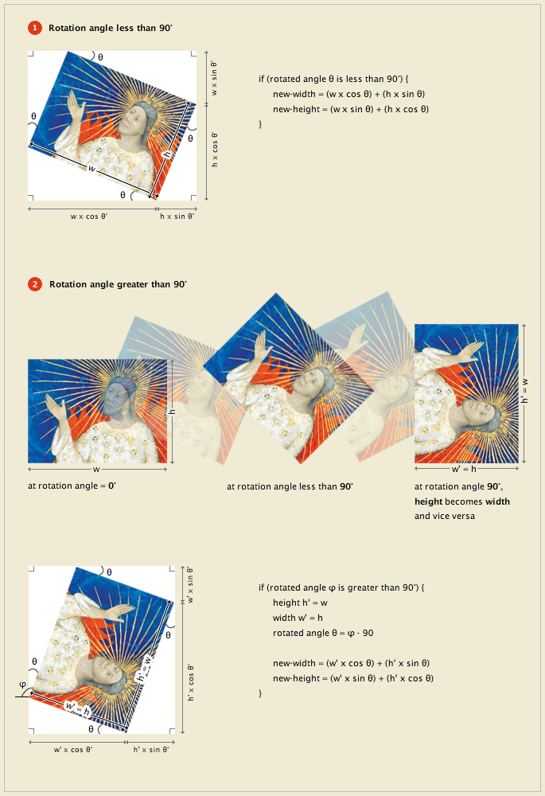

As described in the IIIF Image 1.0
API, Section 4.2
(Rotation), in order to retain the size of the requested image
contents rotation will change the
width and height dimensions of the returned image file. To calculate
the dimensions of the returned image file for a given rotation in
compliance with the IIIF API, the
following formula can be used:
